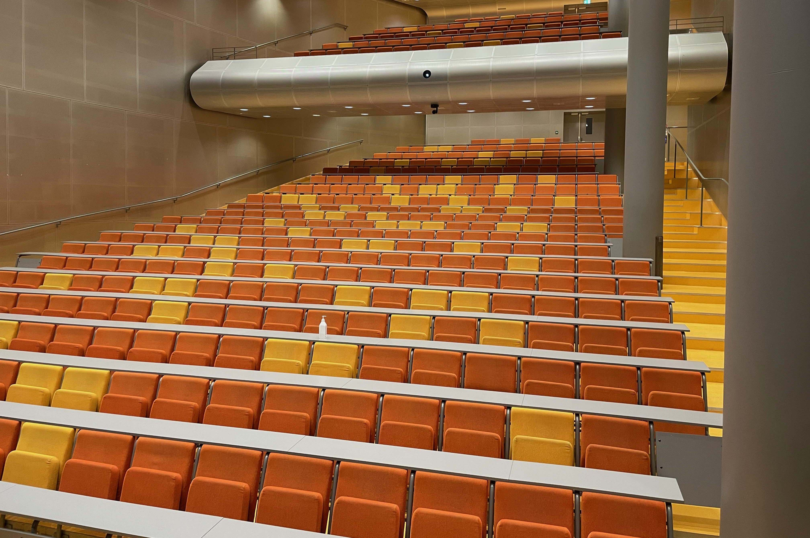

Lecture Hall
Photo: Johannes Solheim
This lecture hall is an impressive and well-equipped learning space that can accommodate a large number of students with a capacity of up to 440 people. It is equipped with modern technology and facilities to ensure an efficient and engaging teaching experience. To ensure equal access for all students and lecturers, the lecture hall is wheelchair accessible, both for lecturers and students, with custom seating and access ramps.
In terms of technical equipment, the lecture hall features a document camera for easy display of written materials and notes. A fixed PC is available, and it's possible to connect a laptop via HDMI or DisplayPort. This makes it easy for lecturers to share presentations and multimedia content with the audience. The audio quality is top-notch, with speakers capable of handling both music and video audio. This ensures that the sound in the lecture hall is clear and crisp, which is crucial for an effective learning experience. Several microphones are also available, including headset microphones, handheld microphones, and a PA system, allowing the lecturer to move freely while maintaining excellent audio quality.
Lighting conditions can be adjusted to suit various teaching situations, and the lecture hall also has a writable PC monitor at the lectern, allowing the lecturer to write and draw while teaching. For the musical elements of teaching, there's even a piano or grand piano available, which can be used for music instruction or cultural events.
The lecture hall is also equipped with a whiteboard for writing down notes and ideas, as well as a screen and projector for visual content. This makes it a versatile space suitable for various teaching purposes. For remote and hybrid teaching, the lecture hall is equipped with technology that makes it easy to connect to virtual participants. This includes equipment for remote teaching, enabling teaching to reach a broader audience. Additionally, there is also a loop system for hearing aid users, ensuring that everyone can benefit from excellent audio quality in the lecture hall. This lecture hall is an ideal venue for teaching, presentations, and events that require a large and well-equipped space for learning and collaboration.
Underoverskrift
Duis neque nunc, maximus a faucibus ac, porttitor non mi. Nullam posuere vestibulum massa, sed congue turpis tempor ac. Sed non eleifend purus. Nullam ac ullamcorper massa. Donec in nisl dapibus, varius lacus sit amet, efficitur ante. Etiam feugiat tincidunt finibus. Suspendisse pharetra purus quis est pellentesque, pretium pulvinar nulla vulputate. Nam vulputate tellus ac elementum semper.

Photo: Johannes Solheim